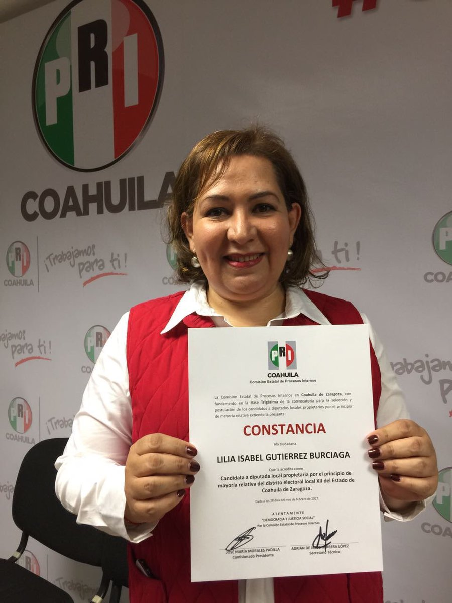

Primeras campañas para reelegir diputados
por
Eric Magar1
1 La última vez que vimos esto, Calles aún era Jefe Máximo
Casi sin excepción, los reflectores de la pista electoral de 2017 apuntaron hacia las carreras de gobernadores del Estado de México y Coahuila, pasando por alto las primeras campañas para reelegir consecutivamente legisladores. Estas campañas son importantes por tratarse de un fenómeno que ha sido inobservable en México desde 1932. Además, la reelección consecutiva brinda la posibilidad de inyectarle oxígeno (muy necesitado) a la maltrecha representación política de nuestra joven democracia.
Este texto reseña la experiencia de Coahuila en materia de reelección consecutiva. El caso representa un ensayo de la institución que entrará en vigor el próximo año en un número importante de estados (aquí hay un resumen de cómo cambia la reelección de un estado a otro).
2 Desinterés de los actores
Debo empezar por señalar el escaso interés de los diputados salientes. Más precisamente, la escasa "ambición estática" que manifestaron—adjetivo que usó Schlesinger (1966), en su clásico libro sobre las carreras congresionales de Estados Unidos, para quienes quieren repetir en el cargo al concluir su mandato electivo.2 Y es que sólo tres ocupantes (incumbents), de veinticinco que integran el Congreso de Coahuila, buscaron reelegirse en sus cargos. La proporción no alcanza ni uno de cada ocho. Dado que los tres ocupantes representaron distritos uninominales en el periodo 2014-2017, pareciera más atinado poner los dieciséis diputados de mayoría en el denominador, con lo que se alcanza casi veinte por ciento de diputados uninominales ambiciosos. Ni así pinta mucho el número relativo.
Habrá que documentarlo y mirar el fenómoeno con detenimiento, pero la falta de interés podría responder a la inercia. Los políticos, acostumbrados a migrar a otros puestos al concluir el período, optaron por hacer lo que siempre han hecho. Ya se verá si esto cambia para el proceso electoral de 2018 y los subsecuentes, como ocurrió en los años 1920 link a Valeria et al.
3 Tres golondrinas ¿hacen primavera?
 Lily Gutiérrez
| Georgina Cano | Javier Díaz González |
Los tres ocupantes fueron repostulados por el PRI, que en 2014 obtuvo el carro completo en los distritos del estado, y dos son mujeres. Se trata de Georgina Cano, Lily Gutiérrez y Javier Díaz González, que compitieron por representar los distritos I, XII y XIV, respectivamente. La Tabla 1 ofrece un resumen de los distritos y sus resultados. Como se aprecia, sólo una de las ocupantes consiguió reelegirse: Lily Gutiérrez. El 5 de junio derrotó a la medallista panamericana Ariana Cepeda de la coalición del PAN por un margen cómodo de 16 puntos. Pero los candidatos de la coalición panista consiguieron derrotar a los otros dos ocupantes. (Una entrevista con la diputada reelecta aquí.)
| Margen | Margen | ||||||
|---|---|---|---|---|---|---|---|
| Distrito | Empalme | Geografía | Ocupante | Part. | 2017 | Result. | 2014 |
| I (antes XV) | 80 | Acuña, Jiménez | Georgina Cano Torralva | PRI | -6 | perdió | +19 |
| XII (antes V) | 100 | Ramos Arizpe, Parras | Lily Gutiérrez Burciaga | PRI | +16 | reelecta | +53 |
| XIV (antes I) | 83 | Saltillo | Javier Díaz González | PRI | -15 | perdió | +32 |
4 Anno terribilis del PRI coahuilense
Es llamativo el escaso éxito de los ocupantes para reelegirse. Sobretodo a la luz de la sólida ventaja electoral que suelen disfrutar los ocupantes en Estados Unidos (Mayhew 1974), el Reino Unido (Cain, Ferejohn y Fiorina 1987), en Francia (François et al. 2016) y en Chile (Salas 2016), entre otros. Aventuro dos explicaciones.
Una es la ola anti-priista que vivió Coahuila en 2017. La tabla reporta el margen de los candidatos en 2017, así como el que obtuvieron en 2014. Aunque los números no son del todo comparables (el siguiente apartado abunda al respecto), es notable la erosión de los márgenes del PRI. Javier Díaz González, que superó a su mejor oposición por 32 puntos en 2014, perdió por 15 puntos este año, una caída de 47 puntos porcentuales. En promedio, el margen de los ocupantes perdió 32 puntos. Ante este swing adverso, sólo Lily Gutiérrez pudo evitar la derrota.
5 El mapa distrital redibujado
La otra explicación es la redistritación. Entre las elecciones de 2014 y 2017 se rediseñaron las delimitaciones distritales del estado. El nuevo mapa corrió a cargo de los cartógrafos del INE. Una parte del cambio en márgenes debe ser atribuible a este factor.
Entre paréntesis en la Tabla 1 aparece el distrito que representaron en 2014-2017 los hasta hoy ocupantes. El diferente numeral romano no indica nada acerca de la geografía de los distritos abandonado y nuevo. De hecho, es interesante notar que los tres renominados compitieron, sin excepción, en distritos relativamente similares a los que habían ganado en 2014. Esto puede verse en la columna 'empalme', que reporta la intersección geográfica de los distritos donde el ocupante se postuló en 2014 y 2017. La medida es el porcentaje de secciones electorales del distrito abandonado que forman parte del nuevo. En cien por ciento de Lily Gutiérrez indica una intersección perfecta: compitió en exactamente el mismo distrito en ambos años, no obstante la redistritación del estado. Los otros ocupantes fueron menos afortunados, perdieron alrededor de 20 por ciento de las secciones de sus distritos originales. Y ambos fueron derrotados. Pero no debe perderse de vista que un empalme de 80 por ciento o más es considerable.
6 Lo progresivo no desaparece
| Municipio donde | Margen | Margen | |||||
|---|---|---|---|---|---|---|---|
| Distrito | Empalme | contendió | Ocupante | Part. | 2017 | Result. | 2014 |
| antes X | 61 | San Pedro | Ana Isabel Durán | PRI | +3 | electa | +27 |
| antes XVI | 100 | Piedras Negras | Sonia Villarreal Pérez | PRI | +12 | electa | +30 |
| RP | --- | Piedras Negras | Lariza Montiel | PANc | -12 | perdió | --- |
| RP | --- | Frontera | Armando Pruneda | PANc | -9 | perdió | --- |
| RP | --- | Matamoros | Leonel Contreras Pámanes | PANc | -10 | perdió | --- |
Hay otro grupo de diputados ocupantes que manifestaron "ambición progresiva" (el otro adjetivo de Schlesinger, que denota a quienes aspiran a ocupar un cargo diferente al concluir el periodo). Cinco ocupantes apostaron por abandonar el Congreso de Coahuila y compitieron por ser alcaldes en las elecciones municipales concurrentes. La Tabla 2 resume los casos. Dos fueron las diputadas de mayoría Ana Isabel Durán y Sonia Villarreal, que el PRI postuló en 2017 en los municipios de San Pedro y Piedras Negras, respectivamente. Ambas ganaron. A tres diputados plurinominales la coalición del PAN los postuló en Piedras Negras, Frontera y Matamoros. Todos perdieron.
Lo interesante es que las dos ocupantes uninominales se postularon en municipios que se empalman mucho con el distrito que representaron. El 61 por ciento del electorado que representó Ana Isabel Durán, y el 100 por ciento del de Sonia Villarreal, pertenecen a sus respectivos nuevos municipios. Igual que los ambiciosos estáticos, consiguieron repostularse ante (más o menos) el mismo electorado. Así que hubo ambición estática (en lo que respecta al electorado) incluso entre los de ambición progresiva (en lo que respecta al cargo). Si cultivaron o no un voto personal, como argumentan Cain, Ferejohn y Fiorina (1987), y Micozzi (2014) es una hipótesis cuya inspección queda pendiente.
7 La próxima cita es en julio de 2018
En resumen, ocho ocupantes buscaron nuevos cargos de elección en Coahuila. De tres estáticos que quisieron repetir en el Congreso, una lo logró. De cinco que quisieron brincar a las alcaldías, dos lo consiguieron. Si, en términos de frecuencias, la primera elección con reelección consecutiva deja qué desear, el estudio de los pormenores de estas campañas permitirá anticipar algunos de los retos que habrán de enfrentarse en 2018, cuando veinticuatro estados permitan reelección legislativa y veintiuno la reelección de alcaldes.
8 Los demás
| Margen | Puesto que aspiró | ¿Lo | |||
|---|---|---|---|---|---|
| Dist. | 2014 | Diputadx | Part. | ocupar en 2017 | obtuvo? |
| I | +37 | Javier Díaz González | PRI | Diputado local distrito XIV (PRI) | No |
| II | +49 | Francisco Tobías Hernández | PRI | Director Gral. CECyTEC Coahuila | Sí |
| III | +44 | José María Fraustro Siller | PRI | No hay registro | ? |
| IV | +36 | Martha Garay Cadena | PRI | No hay registro | ? |
| V | +66 | Lily Gutiérrez Burciaga | PRI | Diputado local Distrito XII (PRI) | Sí |
| VI | +71 | Verónica Martínez García | PRI | No hay registro | ? |
| VII | +41 | Shamir Fernández Hernández | PRI | No hay registro | ? |
| VIII | +34 | Irma Leticia Castaño Orozco | PRI | No hay registro | ? |
| IX | +28 | Luis Gurza Jadar | PRI | No hay registro | ? |
| X | +26 | Ana Isabel Durán | PRI | Alcalde San Pedro (PRI) | Sí |
| XI | +25 | José Ricardo Saldívar Vaquera | PRI | No hay registro | ? |
| XII | +28 | Melchor Sánchez de la Fuente | PRI | No hay registro | ? |
| XIII | +36 | Antonio Nerio Maltos | PRI | No hay registro | ? |
| XIV | +17 | Carolina Morales Iribarren | PRI | No hay registro | ? |
| XV | +19 | Georgina Cano Torralva | PRI | Diputada local Distrito I (PRI) | No |
| XVI | +30 | Sonia Villarreal | PRI | Alcalde Piedras Negras (PRI) | Sí |
| RP | --- | Jesús de León Tello | PAN | No hay registro | ? |
| RP | --- | Lariza Montiel | PAN | Alcalde Piedras Negras (coal. PAN) | No |
| RP | --- | Armando Pruneda | PAN | Alcalde Frontera (coal. PAN) | No |
| RP | --- | Yolanda Olga Cuño Contreras | PAN | No hay registro | ? |
| RP | --- | Sergio Garza Castillo | UDC | No hay registro | ? |
| RP | --- | Leonel Contreras Pámanes | PPC | Alcalde Matamoros (coal. PAN) | No |
| RP | --- | Javier Jesús Rodríguez Mendoza | PVEM | No hay registro | ? |
| RP | --- | Luisa Ivone Gallegos Martínez | PANAL | No hay registro | ? |
| RP | --- | Claudia Elisa Morales Salazar | SDI | No hay registro | ? |
9 Referencias
@book{cain.etal.1987,
author = "Cain, Bruce E. and Ferejohn, John A. and Fiorina, Morris P.",
title = "The personal vote: constituency service and electoral independence",
publisher = hup,
address = "Cambridge, MA",
year = 1987
}
@unpublished{francois.etal.cmpSpendFrance.2016,
author = "Fran{\,c}ois, Abel and Visser, Michael and Wilner, Lionel",
title = "Campaign spending and legislative election outcomes: Exploiting the {F}rench political financing reforms of the mid-1990s",
note = "Working paper no.\2016--28, CREST",
year = 2016,
}
@book{mayhew.1974,
author = "Mayhew, David R.",
title = "Congress: The Electoral Connection",
publisher = "Yale University Press",
address = "New Haven",
year = 1974
}
@article{micozziNonStatic.2014,
title = {From House to Home: Strategic Bill Drafting in Multilevel Systems with Non-Static Ambition},
author = {Micozzi, Juan Pablo},
journal = jls,
volume = 20,
number = 3,
year = 2014
}
@article{salasIncumbAdvChile.2016,
author = "Salas, Christian",
title = "Incumbency advantage in multi-member districts: Evidence from congressional elections in Chile",
journal = es,
volume = 42,
number = "June",
pages = "213--21",
year = 2016
}
@book{samuels.2003,
author = "Samuels, David",
title = "Ambition, Federalism, and Legislative Politics in Brazil",
publisher = cup,
address = "New York",
year = 2003
}
@book{schlesinger.1966,
author = "Schlesinger, Joseph A.",
title = "Ambition and Politics: Political Careers in the United States",
publisher = "Rand McNally",
address = "Chicago",
year = 1966,
}
Nota al pie de página:
Agradezco a Juan Carlos López Palma, Edgar Monsiváis Solís, Gonzalo Solís Rubalcava, Yoshua Pellman Charnievich y Marco Cabrera Gómez haber recopilado mucha de la información que sostiene este texto.
Micozzi (2014) estudia un sistema cuyos legisladores carecen de ambición estática, el argentino; Samuels (2003) otro, el brasileño.